Enemies
Encountered/None |
|
Diary Entry 14: Village of Zoah Paet's Request I soon found myself in the great Village of Zoah. There were so many things to see and do, I didn't know where to start. I walked into an item shop owned by a man named Jared. He had just opened shop not too long ago and had many items to buy. Some books within his shop caught my eye and he said I could take some. After talking to him for a while, he told me to go find a man named Juba who knows many things. He also mentioned an old man who wanted him to fix his gun. Jared wasn't too sure if he should fix it, since the man was so old and was in no condition to go out hunting. I left Jared's shop and asked the gatekeeper for directions to Juba's. He told me Juba's wasn't open during the day and directed me to a blue door. To the right of the blue door I entered a brown house. Inside, I found the night gatekeeper named Abner. After talking to him repeatedly, he assumed we were good friends and asked me if he could borrow 100 Dynes. Being the nice guy that I am, I agreed. He better pay me back! To the left of Juba's, I found a tunnel which connected to the back of town. It was here that I met a man named Aldo. He wasn't very polite, so I ditched him and headed off in a different direction. To the right of the tunnel, I found the back entrance to Juba's. It wasn't locked! I was inside an empty bar. In the back I found a girl named Jeal. She noticed the Verato Pipe I had been carrying around. She told me she was from the Village Verato. I happily gave it to her fulfilling my promise to Raul. I left out the back entrance and once outside, I noticed a path to the right of Juba's bar. I walked a ways up this path and found another house to the right. Within, I found the old man Jared was talking about. His name was Radgam, an old hunter. Looking around his room, I saw a rare Ancient Age gun on a pedestal. It was similar to mine. I wondered how he had acquired it, was he also a dragon rider at one time? When I fixated my eyes upon it, he screamed, "Don't touch that!" I told him I was sorry and that I just couldn't help myself, because it was so rare. After talking to him for a while, he eventually became curious as to my knowledge about monsters. He asked me a series of questions. I got them all right! He rewarded me with a Tri-burst gun part. When I left Radgam's house, night had already cast its shadow over the sky. Directly in front of me, I found a strange well. I entered it and emerged in a different section of town. I found a door. Inside, was a small boy called Bezer. He had been hiding from his grandfather. He gave me an Amikhan Ring for promising to keep his hiding spot a secret. It was now time to go see Juba, so I headed off to his bar. Upon entering, I found a scary shirtless man hovering over a series of illuminated drinks. He wouldn't talk to me unless I ordered one of them, so I gave him 20 Dynes. It tasted horrible, but I pretended to like it and he gave me an Elixir Minor. I asked him about the Empire. He talked about a black ship that I knew nothing about. He also said the Empire was looking for the Tower, found on the other side of the forest. He gave me a picture of the Tower and said to go talk to a man called Paet, if I wanted to know more. He told me to go see him in the morning. Morning soon arrived, and just as Juba said, I found Paet working on some ancient device towards the back of town. I asked him if he knew anything about the Tower. He refused to tell me, but said he might change his mind if I could find him some ship parts in a place north of the Forbidden Zone called Georgius. I had no choice but to agree to his terms. Before venturing off to this unknown place, I returned to the caravan to let Raul know that I had found a survivor from the Village of Verato. He thanked me and gave me a reward of 1000 Dynes. He told me a story about his village. The Empire had deemed it necessary to bring the border lands under control. Raul working as a mercenary for the Empire at the time, went ahead to warn his village of the impending danger. The border lands were located near the village, so it was also destroyed with no consideration for the villagers lives. Raul didn't make it on time and had to face the horrifying fact that his fellow villagers were nothing but ash. It was then that he found the Verato Pipe. After his sad tale, I said good-bye and headed off to my next destination, Georgius. 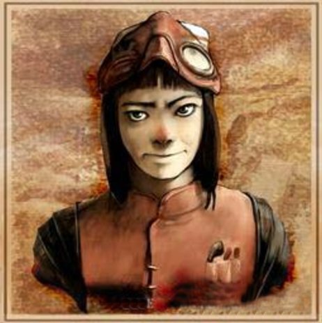 |
|
| Divine
Overview |
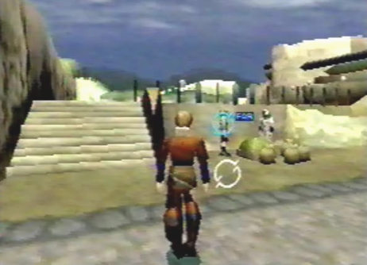 1. When you first enter the Liberal District in the Village of Zoah, you will notice a trade taking place between two men. If you stand far away, you can eavesdrop on them and listen to their conversation. Note, this works for other instances when there are two people near each other talking. |
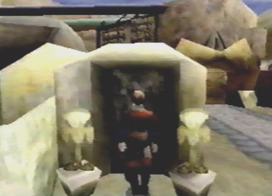 2. Enter the door with the strange symbol. |
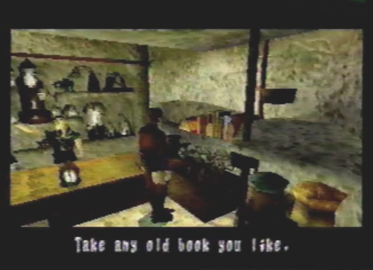 3. You will find yourself in an item shop. The shopkeeper Jared just opened shop and has lots of items for you to buy (same items and prices as the caravan). Walk over to the shelf, and examine the books. Jared will say you can have some. Keep examining the book shelf to receive up to 4 books. The books you can take are: Ship Report, Bible 2, Dragon Book 1 and Zoah Bible. If you talk to Jared, he will tell you to go find Juba. He also mentions an old man who wants him to fix his gun. Jared thinks it isn't such a good idea, since the man is so old and shouldn't be out hunting. |
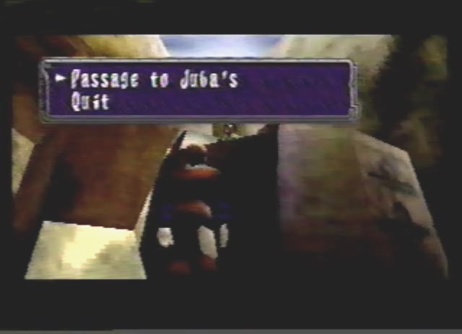 4. Siffle the gatekeeper can give you directions to Juba's bar. |
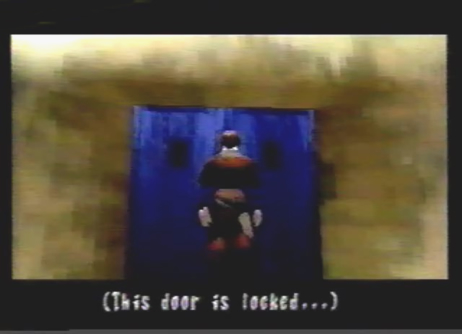 5. Juba's bar isn't open during the day. |
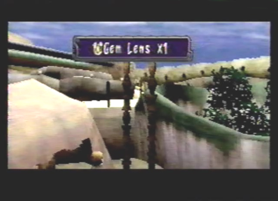 6. To the right of Juba's bar, you will see two finely carved pieces of wood. Examine the tip of them to receive a Gem Lens. |
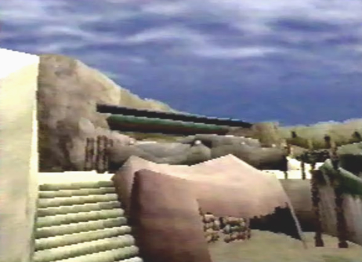 7. Go up the stairs found to the left of Juba's bar and enter the brown building. |
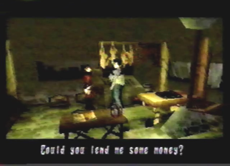 8. Inside, you will find the night gatekeeper Abner. Talk to him repeatedly and he will eventually ask if he can borrow 100 Dynes. Note, if you bought a lot of items and have less than 100 Dynes, he wont ask you to give him any money, so make sure you have at least 100 Dynes before talking to him. Agree to lend him the money. You can get something from him later. |
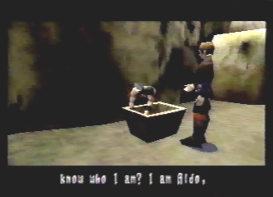 9. Walk under the tunnel, found to the left of Juba's bar. This tunnel connects to the back of town. Here, you will be introduced to Aldo. He's not very sociable towards you. |
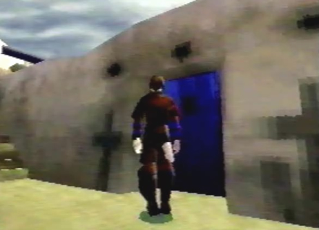 10. To the right of the tunnel, you will find the back entrance to Juba's bar. It isn't locked! |
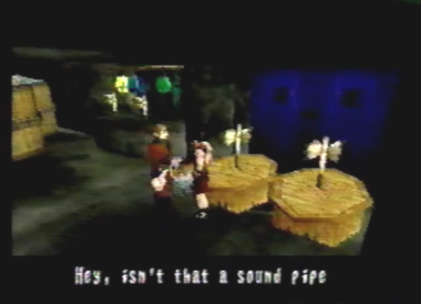 11. Once inside, you will meet the waitress Jeal. She notices you have the Verato Pipe. Edge gives it to her as a gift, fulfilling his promise to Raul. |
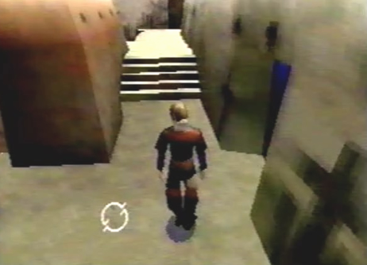 12. Exit the bar and head up the northern stairs. To the right you will be able to enter another house. |
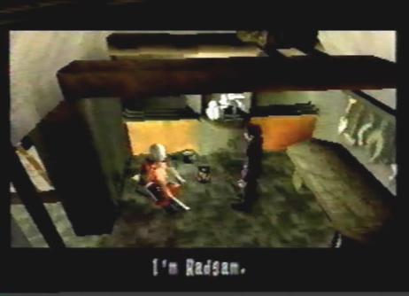 13. Once you enter the house, you will find the old man Jared was talking about. His name is Radgam. Have a conversation with him, then examine his gun. He will get very angry and tell you not to touch it. keep talking to him repeatedly until he says, "How long has it been since you went hunting?" Radgam will want to test your monster knowledge and will give you a series of questions to answer. Here are the questions and the answers. 1. Against a Baldor, where is it safe? Answer, the back. 2. How do you kill a Lathum? Answer, find its hidden weakness. 3. What makes a Nanyd Swarm scatter? Answer, kill the Queen. 4. Name a characteristic of the Lazara? Answer, dodges lasers. 5. Which is summoned by a Pludger? Answer, Nanyds. 6. What is the Horned Stryder's attack? Answer, paralyzing shard. 7. Mangnata or Gelata, which is stronger? Answer, Magnata Urchins. For answering all of the questions correctly, Radgam will give you a Tri-Burst gun part. Good for you! |
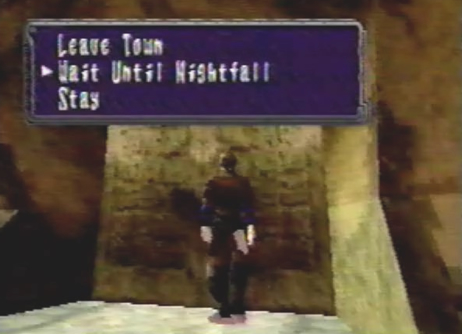 14. Go back to the entrance of town and select "Wait Until Nightfall." |
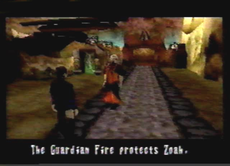 15. You will find Radgam walking around at night. He will talk about the Guardian Fire, and ask you a personal question. |
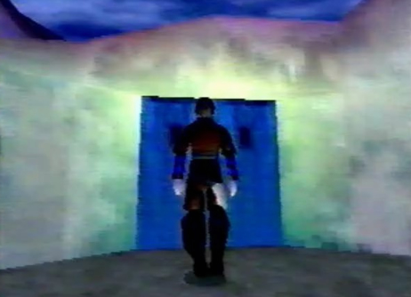 16. It's time to go back to Juba's bar, it is now open for business! |
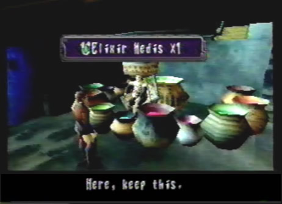 17. Talk to Juba, he will ask you if you want a drink. He will only talk to you after you order, so pay 20 Dynes. Tell him the drink was good, and he will give you an Elixir Medis. Now, ask him about the Empire. He will talk about a black ship and the Tower. Juba tells you to go see a man named Paet if you want to know more. You can find him in the morning. |
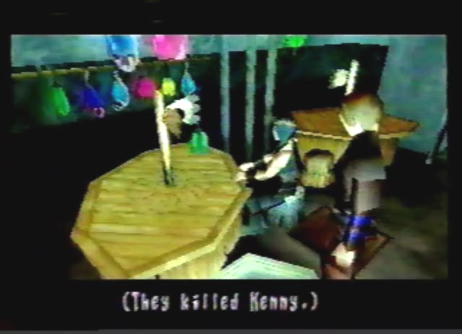 18. Before you leave, go upstairs. In the far left corner of the room, examine the table Aldo is sitting at. It says "They killed Kenny." This was a little reference to South Park the translators put in. |
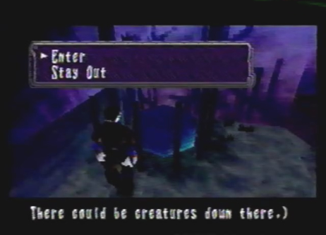 19. Go out the back entrance of Juba's bar and go back down the northern path. When you walk a ways up, you will find a strange well to the left. Go down it. |
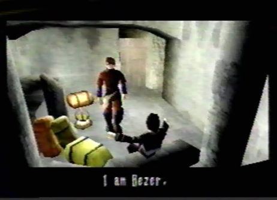 20. When you emerge, you can enter a door found right near the well. Inside, is a boy called Bezer. He will give you an Amirkhan Ring for promising to keep his hiding place a secret. |
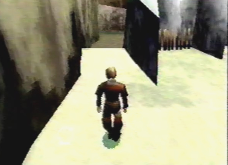 21. It's now time to go see Paet. Walk under the tunnel and go to the far back of town, just past Aldo's house behind the firewood, is where he can be found. |
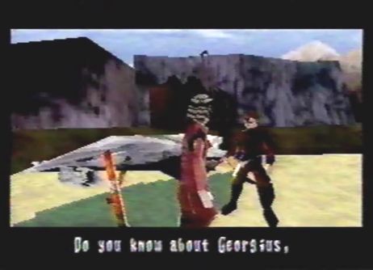 22. Paet will ask you to bring him back some ship parts from Georgius in exchange for information about the Tower. But, before going to Georgius return to the caravan, there is something we need to take care of. |
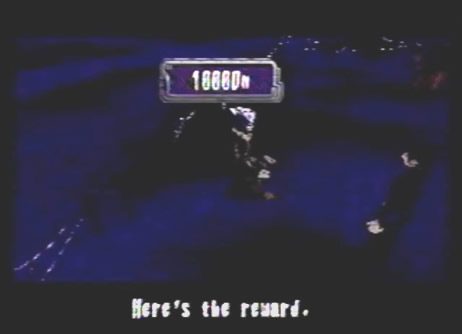 23. Before heading off to Georgius, head back to the caravan. Go see Raul at night and tell him you found a survivor from the Village of Verato. He will thank you and give you 1000 Dynes as a reward. |